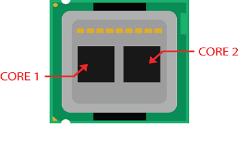
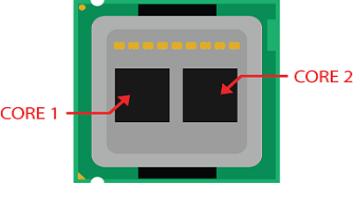

Parcial Uno
CPU
¿Qué es un CPU?
CPU son las siglas de Central Processing Unit, lo que traducido significa Unidad Central de Procesamiento.
Se trata de uno de los componentes vitales que te vas a encontrar en tu ordenador, tu smartphone o tu tableta o portátil, e incluso en relojes y prácticamente cualquier dispositivo electrónico. Sin él, simplemente no podrían funcionar. Se la suele llamar coloquialmente como microprocesador o procesador, puedes considerarla como el cerebro de cualquier dispositivo
Se encarga de procesar todas las instrucciones del dispositivo, leyendo las órdenes y requisitos del sistema operativo, así como las instrucciones de cada uno de los componentes y las aplicaciones. Es un componente básico de todo dispositivo que procesa datos y realiza cálculos matemáticos-informáticos.
Algunas de las funciones básicas del CPU son recolectar información, decodificarla en partes menores y llevar a cabo instrucciones, que luego ejecuta.
¿Para qué sirve un CPU?
El CPU es la pieza fundamental de todo dispositivo, es considerado el cerebro de un sistema. Es el encargado de leer, interpretar y procesar las instrucciones primero del sistema operativo, y después de los programas o aplicaciones que tienes instalados en el ordenador.
En primer lugar, es el encargado de recibir e interpretar datos y ejecutar las secuencias de instrucciones a realizar por cada programa valiéndose de operaciones aritméticas y matemáticas. El CPU interpreta todos los datos que provienen del dispositivo, tanto de los programas como la información que envía el usuario a través de aplicaciones. Además, controla el buen funcionamiento de cada componente del sistema para que todas las acciones sean realizadas en tiempo y forma.
Cuando abres Word o tu navegador, este tiene que cargarse, y para ello necesitar realizar una serie de pasos cuyas instrucciones le manda al procesador. Cada acción que hagas luego dentro, también enviará instrucciones para poder ejecutarse y realizarse.
¿Cómo es la CPU?
La CPU suele ser pequeña, con forma cuadrada, y tiene conectores y pines metálicos. Por lo general, suele estar instalada en la placa base de un ordenador, en un zócalo especial que puede estar en diferentes sitios dependiendo de la placa base. El procesador no va soldado a la placa, por lo que puedes cambiar la CPU de un ordenador por otra si quieres.
La CPU tiene un mínimo de un procesador o núcleo en su interior, un chip para realizar los cálculos y operaciones. Todos ellos se identifican por ese nombre que incluye la palabra Core, pero antes se le pone una referencia al número de núcleos. Como por ejemplo el famoso Dual-Core, que describe que tiene 2 núcleos.
Que la CPU tenga varios procesadores o núcleos suele implicar que es capaz de realizar más operaciones a la vez, por lo que su funcionamiento puede ser más rápido y mejor. Sin embargo, esto no siempre quiere decir que cuantos más núcleo haya más rápido será todo, ya que esto es algo que también depende de cómo sean cada uno de los núcleos.
Todos los procesadores han de ir conectados al socket de la placa base, por lo que algunos procesadores llevan pines en su parte inferior, aunque hay otros que solo llevan contactos de oro. Si el procesador es el cerebro del ordenador, la placa base es la médula espinal del sistema. Estos pines son los encargados de transmitir la información que entra en el procesador, así como la que sale del mismo.
Partes del CPU
- Núcleo: Es la unidad base que constituye a un CPU, que interpreta y ejecuta acciones.
- Unidad de control: Es un circuito digital que extrae la instrucción de la memoria, la descifra y la ejecuta.
- Unidad aritmética lógica: Es un circuito digital que lleva a cabo las operaciones lógicas, matemáticas y aritméticas entre los datos.
- Unidad de coma flotante: Es un componente especializado en el cálculo de operaciones con coma flotante.
- Memoria caché: Es la memoria en la que se almacenan los datos que el usuario consulta con frecuencia, esto permite ganar velocidad al procesador.
- Registros: Es una memoria de alta velocidad que permite controlar y almacenar las instrucciones en ejecución.
- Controlador de memoria: Es un circuito que puede estar integrado al procesador y que regula el flujo de datos entre el procesador y la memoria.
- Bus: Es un sistema digital que envía y recibe datos entre los componentes.
- Tarjeta gráfica: Es el componente que procesa los datos de video e imagen, que puede estar incluido o no en el CPU.
 

Características de un CPU
Existen ciertas características que diferencian a un CPU de otro:
- Consumo energético: Refiere a la cantidad de energía que consume el CPU al ejecutar acciones, a mayor calidad, mayor el consumo energético.
- Frecuencia de reloj: Refiere a la velocidad de reloj que tiene el CPU y que determina la cantidad de acciones que puede ejecutar en un período de tiempo
- Número de núcleos: A mayor cantidad de núcleos, mayor la cantidad de acciones que pueden realizarse en forma simultánea.
- Número de hilos: Ayuda al procesador a manejar y ejecutar acciones de forma más eficiente. Divide las tareas o procesos para optimizar los tiempos de espera entre una acción y la otra.
- Memoria caché: Almacena datos y permite acceder a ellos de manera rápida. La velocidad y capacidad de la memoria caché mejora el desempeño del dispositivo.
- Tipo de bus: Refiere a la comunicación que establece el CPU con el resto del sistema.
Operaciones
La operación fundamental de la mayoría de las CPU es ejecutar una secuencia de instrucciones almacenadas llamadas «programa». El programa es representado por una serie de números que se mantienen en una cierta clase de memoria de ordenador. Hay cuatro pasos que casi todos las CPU de arquitectura de von Neumann usan en su operación: fetch, decode, execute, y writeback, (leer, decodificar, ejecutar y escribir).
- 1. Fetch: El primer paso, leer, implica el recuperar una instrucción, (que es representada por un número o una secuencia de números), de la memoria de programa.
- 2. Decode: En el paso de decodificación, la instrucción es dividida en partes que tienen significado para otras unidades de la CPU. La manera en que el valor de la instrucción numérica es interpretado está definida por la arquitectura del conjunto de instrucciones (el ISA) de la CPU.
- 3. Execute: Después de los pasos de lectura y decodificación, es llevado a cabo el paso de la ejecución de la instrucción. Durante este paso, varias unidades del CPU son conectadas de tal manera que ellas pueden realizar la operación deseada. Si, por ejemplo, una operación de adición fue solicitada, una unidad aritmético lógica (ALU) será conectada a un conjunto de entradas y un conjunto de salidas.
- 4. Writeback: El paso final, la escritura, simplemente «escribe» los resultados del paso de ejecución a una cierta forma de memoria. Muy a menudo, los resultados son escritos a algún registro interno del CPU para acceso rápido por subsecuentes instrucciones. En otros casos los resultados pueden ser escritos a una memoria principal más lenta pero más barata y más grande.
Lenguaje del CPU
El lenguaje de los CPU es un sistema de códigos a través del que se comunican las instrucciones que debe ejecutar el procesador para el correcto funcionamiento del dispositivo.
Los procesadores no interpretan cualquier tipo de información, sino aquella escrita de forma binaria, es decir, con los caracteres cero y uno. Cada programa o aplicación está formado por una cadena de instrucciones escritas en este código, que son correctamente interpretadas por la máquina.